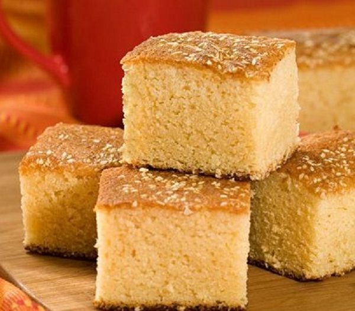

Quesadilla
Las quesadillas son un representativo pan que es elaborado a base de harina de arroz.

Ingredientes
- 2 Huevos
- 1 Taza de Leche
- 1 Taza de crema espesa
- 3 oz Mantequilla
- 1 Taza de azúcar
- 1 Taza de queso seco
- 2 Tazas de harina de arroz
- 2 Cucharadas de polvo de hornear
- ajonjolí tostado
Preparación
- Poner los ingredientes húmedos en una licuadora y mezclar bien, añadir el azúcar y mezclar de nuevo hasta que estén bien incorporados. En un tazón grande, tamizar los ingredientes secos y verter la mezcla. Con un batidor de mano, doble los ingredientes con mucho cuidado para mantener el aire dentro de la mezcla.
- Cuando la mezcla esté lista, vierta en 2 moldes para hornear ligeramente engrasados, espolvoree las semillas de ajonjolí encima y hornee a 350°F durante unos 25-30 minutos (o hasta que estén firmes y doradas).
- Tenga en cuenta que dependiendo del nivel de humedad, algunos ajustes de temperatura y tiempo pueden ser necesarios. Esta receta no es tan seca como la quesadilla comercial regular. Disfrute de esta quesadilla de arroz con toda la familia.